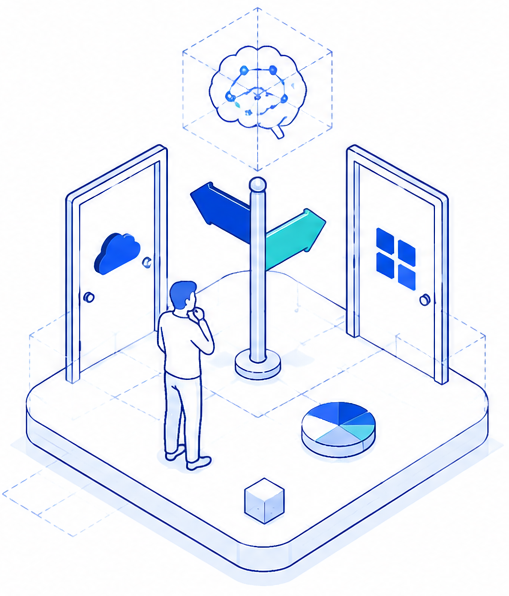

WHAT WE EXAMINE
The anatomy of this intelligence

Systems & workflow
assessment
Integration & automation
readiness
Cyber resilience
posture
Data quality &
governance
Regulatory
compliance
Analytics &
decision support
WHEN DIGITAL DECISIONS CARRY OPERATIONAL CONSEQUENCES
Independent intelligence for decisions about value, data, integration, risk and responsible Al adoption.

PRIORITISE & INVEST
Where can digital create measurable value?
- Business case
- Digital roadmap
- Al opportunity prioritisation
CONNECT & USE DATA
Can systems and data support better decisions?
- Interoperability
- Data quality and visibility
-
 Analytics and decision support
Analytics and decision support
GOVERN & ASSURE
Is the digital environment safe, compliant and scalable?
-
 Cybersecurity
Cybersecurity
-
 Data protection
Data protection
- Al governance and assurance
Digital Intelligence clarifies what to prioritise, how systems and data should connect, and which safeguards must be in place before technology investment or implementation.
Swipe right to see more